数独是《最强大脑》里的老面孔了，不过玩法一直在变，从盲填数独到立体数独，再到中外选手数独大对决，规则越来越复杂，难度系数越来越高。第五季《最强大脑》中又迎来了一个超级难题——翻滚数独。
现场有24种由12宫组成的异形数独，它们的外围全是4×4的16宫，空余的4宫是随机的，例如图6-1中不打斜线的12宫即组成一个异形数独。这12宫又均匀分成红、黄、蓝3种色块，且每宫少2个数字。嘉宾随机选取一个异形数独，在保持每宫的相对位置不变的情况下，将该数独题的每一宫随机放入现场另一个装置——三棱柱阵中。三棱柱阵由9根旋转柱体组成，每根柱体3个面，每面有9宫。
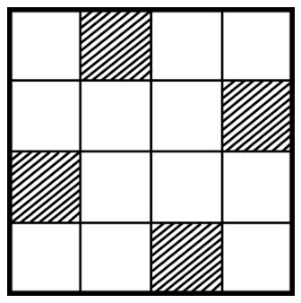
图6-1
竞赛开始时，三棱柱阵以一定转速（每4秒转一次）匀速翻转，两位选手应在这翻转的宫阵中找到嘉宾所选择的特定的异形数独题，并在答题板上写出每宫的坐标位置（三棱柱阵中每行每列都标有A~I的字母），并填上每宫中缺少的数字。
“翻滚数独”对选手综合实力，即空间想象力、推理计算力、观察力、快速记忆力等的考验都是前所未有的。
数独是一种数学逻辑游戏。其盘面是一个九宫，每一宫又分为9个小格，在这81格中给出已知数字（称为提示数）作为解题条件。利用逻辑推理，在其他的空格上填入1~9的数字，并使每个数字在每一行、每一列和每一宫中都只出现一次，上述九宫形的数独亦称为标准数独。
数独起源于18世纪初瑞士数学家欧拉所研究的拉丁方阵。19世纪80年代，美国的一位退休建筑师格昂斯根据这种拉丁方阵发明了一种趣味填数游戏，这就是数独的雏形。20世纪70年代，人们在美国纽约的一本益智杂志上发现了这个游戏，当时被称为填数字，这是目前公认的数独最早的见报版本。1984年，一位日本学者将其带到了日本，发表在Nikoli公司的一本游戏杂志上，改名为“数独”。“数”是数字的意思，“独”是唯一的意思。后来，一位曾在中国香港工作的新西兰人高乐德在1997年3月到东京旅游时，无意中发现了它。他首先将其发表在英国的《泰晤士报》上，不久其他报纸也纷纷刊登，很快便风靡英国。在20世纪90年代，我国的部分益智类书籍开始刊登，从而得到推广。
影响数独难度的因素很多。就题目本身而言，包括提高难度的技巧、各种技巧所用的次数、是否用隐藏深度及广度的技巧组合，当前盘面可逻辑推导出的填数个数等；对于玩家而言，了解的技巧数量、熟练程度、观察力等自然也影响对一道题的难度判断。
如果一道题目的提示数少，那么题目就会相对难，提示数多则会简单，这是一般人判断问题难易的思维模式，但数独谜题提示数的多寡与难易并无绝对关系。多提示数比少提示数难的情况屡见不鲜，即使是相同的提示数（甚至相同谜题图形）也可以变化出难度各异的问题。提示数少对于出题的困难度有比较直接的影响，以20~35个提示数而言，每少一个提示数，其出题难度会增加数倍。在制作谜题时，提示数在22以下非常困难，所以常见的数独题其提示数在23~30，其原因在于制作相对容易，且可以设计出比较漂亮的图形。
总之，数独游戏的难易程度很难给出一个客观的判断标准。下面就是一个例子。
芬兰数学家因卡拉花费3个月的时间设计出了世界上迄今难度最大的数独游戏，而且它只有一个答案。因卡拉说只有思考能力最快、头脑最聪明的人才能破解这个难题。这是英国《每日邮报》2012年6月30日的一篇报道，其谜面如图6-2所示。
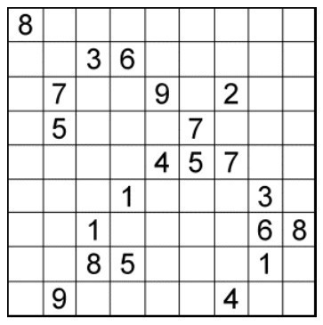
图6-2
2013年，国内不少媒体集中报道了一则消息：江苏扬州市一位69岁的老农用了3天时间破解了这一难题。后来又发现该农民更改了原谜面上的一个数字，当然这就不能算是已解决，但剧情又发生了翻转，媒体又陆续报道了几个答案。
图6-3是重庆八旬副教授的答案。据报道，这个答案也曾被温州的五旬老伯所获，另一位广东的学生用两小时也得到了同一答案。网友“谷子大鬼”上传了他的解答，据称用时2小时20分钟，他的答案如图6-4所示。
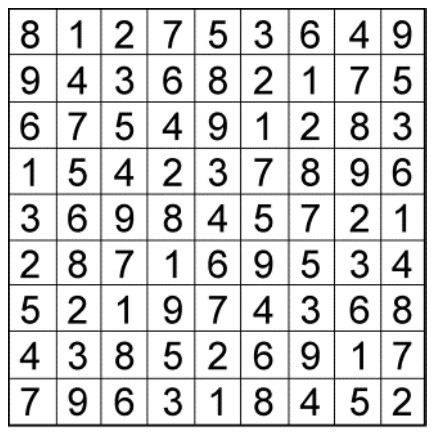
图6-3
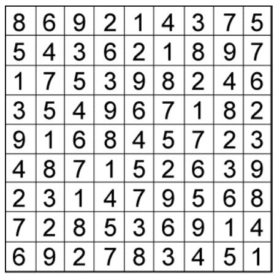
图6-4
显然，这是另一个正解，打破了因卡拉“它只有一个答案”的断言。笔者在前面提到过，数独难度并无科学的评判标准。制题者有他的思维，答题人又有各自的方法，难分伯仲。但有一点可以肯定，出题者自我评定是难度最大的，这未免有点“老王自夸”了！
任何时候、任何事情都不要轻视中国人的聪明才智！这倒是一句至理金句。
下面所谈数独中的数学问题，都是针对标准数独的。
（1）终盘的可能性
通常将一个完成了的数独题目称为终盘，在数独游戏盛行后，人们自然想知道这个游戏究竟存在多少个终盘形式。2005年，德国数学家费尔根豪尔给出了答案：数独的最大可能终盘数是6,676,903,752,021,072,936,960种，约为6.67×1021种组合。如果等价终盘（如旋转、翻转、行行对换、列列对换、数字对换等形式）不计入，则有5,472,730,538个组合，相当于全球人口总数。这一更准确的终盘数是英国数学家弗雷泽·贾维斯和拉塞尔给出的。
（2）最小初盘问题
与终盘相对应，一个数独游戏给出的初始条件称为初盘。一般常见的初盘数字个数在22~28，而数独爱好者们常问的一个问题是：最少给出多少个数字，数独游戏才能确保有唯一解。
此前发现这个数字很可能是17，这个最小唯一解初盘是由一名日本数独爱好者发现的。图6-5即是其初盘，但这只是一个例子，还未得到证明。澳大利亚数学家戈登·罗艾尔已经收集了36,628个有17个数字的唯一解初盘。
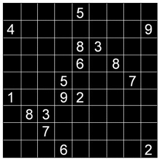
图6-5
刚刚迈入2012年，数学界就有一个不大不小的轰动。3位爱尔兰数学家发表了一篇论文，证明数独至少需要17个初始数字才有唯一解。
开始，几位数学家的想法非常简单：只要把每一种有16个初始数字的数独都尝试一遍，自然就知道答案了。但很可惜，数独的组合实在是太多了，即使是用现在运行最快的计算机，也不可能在我们有生之年穷尽所有组合。所以，必须用一些数学的方法来减少尝试的次数。他们发现，数独中的一些组合是等价的。如图6-6所示，交换第一列和第二列对整个数独并没有影响，而这只是其中一个例子。3位数学家总结了数独的4种等价交换。
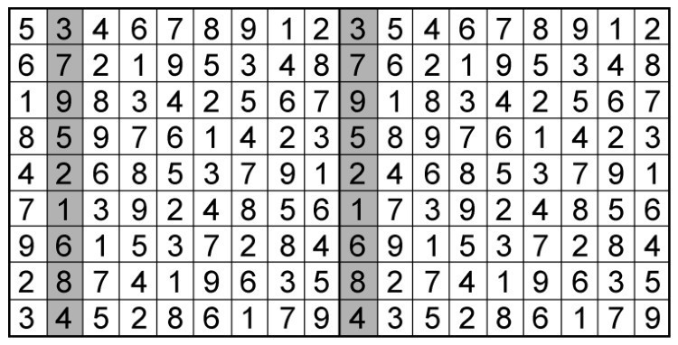
图6-6
①列与列的重新排列；
②行与行的重新排列；
③数字1到9的重新排列，如把原先是1的位置都填上2，再把原先填2的位置都填上3……直到把原先是9的位置都填上1；
④网格的变换，如将整个数独顺时针旋转90°，做镜像对称等。
虽然等价类的数量已经降到可以接受的范围，但问题还远未解决。因为在选择了某一等价类的一种情况以后，还需要验证该情况的81个数字中是否可以选出16个，使得以这16个数为初始数字的数独有唯一解。
后来，几位数学家利用了“不可避免集”的概念。“不可避免集”是图论中的一个概念，如图6-7所示，圈出的5和9可以互相交换位置而产生两个不同的解。为了让这个数独的答案唯一，这4个数字里必须有一个数字是起始数字，这样我们才能限定5和9的最终位置。这4个数字也被称为一个不可避免集。
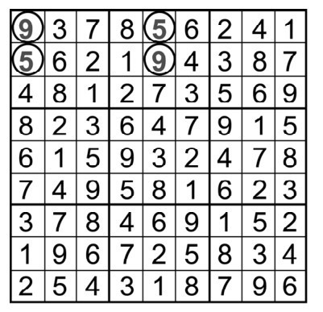
图6-7
数学家们总结了一套不可避免集的模板，总共记录了525种不同的不可避免集。因为一开始所说的4种等价变换对不可避免集也适用，所以他们对不可避免集进行了一些处理，以保证这525种不可避免集互相不能通过4种等价变换得到。
此时，枚举算法就被改造成这样：数学家给所有的不可避免集都设定了一个状态，分为“被击中”或“未被击中”两种。初始时九宫格81个方格内都没有填入数字，所有不可避免集的初始状态均为“未被击中”。之后每次选择一个最小的未被击中的不可避免集，枚举其中的每个格子。即每次选择不可避免集中的一个格子填充初始数字，直至试完不可避免集中的所有空格。同时将这个不可避免集标记为“被击中”状态，每次枚举都有4种可能。
①如果这个格子也出现在其他不可避免集中，那么将这些被涉及的不可避免集也标记为“被击中状态”；
②如果枚举了16个格子后还有不可避免集未被击中，说明以这16个格子为初始状态的数独一定没有唯一解；
③枚举了16个格子后恰好所有的不可避免集全部被击中；
④如果枚举了不到16个格子时所有的不可避免集已经全部被击中，则从剩下的所有格子中再枚举几个使填充了数字的格子达到16个。
在这一系列优化之后，算法的复杂程度大为降低，最后一步就是用解数独的程序来验证所有枚举的情况是否有唯一解了。幸而这个算法得到了一个确定的结果：所有仅含16个初始数字的数独都不存在唯一解！都柏林大学学院的麦奎尔于2012年1月1日在互联网上贴出了自己的证明。在1月7日美国波士顿召开的一次会议上，数学家们就此达成了共识，还表示这种“大集合算法”还可能在其他领域产生作用。
（3）最大初盘问题
与最小初盘相反，在一个数独初盘中，最多可给出多少个数字，使得再增加一个数字，该问题便没有唯一解了。
可以采用倒推法，在初始数字为80个的情况下无须说明，在初始数字为79个的初盘中也大约如此，因为考虑到每一个小九宫格必须满足每个数字出现且仅出现一次，这意味着所缺少的数字都必须出现在同一个九宫格内。所以，还可以依次推出78个数字的初盘也有唯一解，但当初盘中给定数字为77个的时候，该数独游戏便至少有两个解。
1735年，数学大师欧拉积劳成疾，右眼失明。他受普鲁士国王腓特烈大帝之邀，到了气候相对温和的德国，任柏林科学院物理数学所所长。
一次腓特烈大帝在阅兵仪式前问其指挥官：在一个由36名军官组成的方队里，若这些军官分别来自6支不同的部队，每支部队均有6种不同军衔的军官，他们能否排成一个6×6的方队，且满足每行、每列既有每支部队的军官，又有不同军衔的军官？指挥官试了许久之后感到无能为力。问题传到欧拉那里，他开始了对这个问题的研究。
如果我们用数字1,2,3,4,5,6表示部队的编号以及6种不同的军衔，而用数对（i，j）来代表从第i个部队挑选出的有军衔j的军官，当然i与j只能取1,2,3,4,5,6这6个不同的数。于是“36军官问题”可提炼成这样一个数学问题。
将36个数偶（1,1）,（1,2）,…,（1,6）,（2,1）,（2,2）,…,（2,6）,（3,1）, （3,2）,…,（6,6）排成6×6方阵，使得每一行的第一个分量为6个不同的数，第二个分量也两两不同；对于方阵中的每一列也是如此。
如果把“36军官问题”一般化就是：将n2个整数偶（1,1）,（1,2）,…, （1,n）,（2,1）,（2,2）,…,（2,n）,…,（n,1）,…,（n,n）排成n×n方阵，使得方阵的每一行和每一列的两个分量两两不同。
欧拉很容易地就证明出n=2是不可能的，而n=3,4,5是可能的，即
n=3:
（1,1）（2,2）（3,3）
（2,3）（3,1）（1,2）
（3,2）（1,3）（2,1）
n=4:（1,1）（2,2）（3,3）（4,4）
（4,2）（3,1）（2,4）（1,3）
（2,3）（1,4）（4,1）（3,2）
（3,4）（4,3）（1,2）（2,1）
n=5:
（1,1）（2,2）（3,3）（4,4）（5,5）
（5,4）（1,5）（2,1）（3,2）（4,3）
（4,2）（5,3）（1,4）（2,5）（3,1）
（3,5）（4,1）（5,2）（1,3）（2,4）
（2,3）（3,4）（4,5）（5,1）（1,2）
但对于n=6的情况，既找不到合乎要求的方阵，又证明不了它不存在，但估计是不存在的。欧拉推测像n=2和n=6这样的形如4m+2（m为非负数）的数，上述方阵是不存在的。直到他去世，这个猜想也没有解决，为后世的数学家留下了一个角逐的难题，后人称之为“欧拉猜想”，这种方阵也随之被称为“欧拉方阵”。
欧拉猜想引起了许多数学家的重视。为了研究方便，人们首先将欧拉方阵拆成两个简单方阵，用第一个分量构成一个方阵，第二个分量构成另外一个。例如，将前面的n=3的欧拉方阵分解成如图6-8所示的两个方阵。
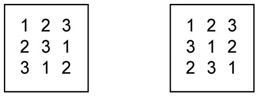
图6-8
在这样的方阵中每一行和每一列都由两两不同的数组成，称为拉丁方，而把能合并成欧拉方阵的两个拉丁方称为一组正交拉丁方。一个欧拉方阵可分解成两个正交拉丁方，但是两个拉丁方不一定能组成欧拉方阵。例如，图6-9是两个三阶拉丁方，它们合并起来并不能组成欧拉方阵。因为合并后只能得到3个不同的数偶，即（1,1）、（2,3）、（3,2），而不是9个不同的数偶。
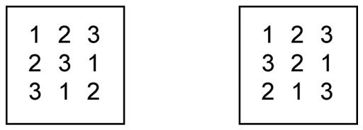
图6-9
正是拉丁方中每一行和每一列都由两两不同的数组成，这一特质催生了人们对数独的联想。把9个三阶拉丁方放在一起，参照拉丁方的特质，就成了当今风靡世界的逻辑推理游戏——标准数独。
由于构造六阶正交拉丁方困难重重，欧拉猜想经历了100多年也没有突破性的进展。直到1901年，法国数学家塔里证明n=6时欧拉猜想成立，即“36军官问题”没有解。此后，人们对欧拉猜想笃信不移。
半个多世纪后，“不幸”的事发生了，印度数学家玻色和美国数学家史里克汉德构造出了22阶正交拉丁方，而另一美国数学家帕克又造出了14阶和26阶的欧拉方阵。不久，他们又证明了当n不等于2或6时，n阶正交拉丁方皆存在。这个结果是人们在170多年的努力中未曾想到的。图6-10即为十阶正交拉丁方。
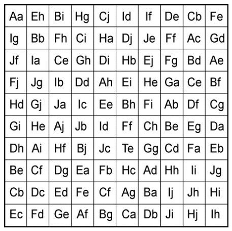
图6-10
当人们把正交拉丁方的概念拓展到三维空间时为：n×n×n的立方体上分别写有0,1,2,…,n-1，使得n个数字在每行、每列中恰好出现一次，这便是n阶立体拉丁方。合并3个n阶立体拉丁方时，若每个有序三重数对000,001,001,…,
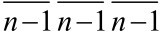
均出现一次，则称它为n阶立体正交拉丁方。已知平面上的“36军官问题”是无解的，但立体六阶正交拉丁方是确实存在的。1982年，阿尔金、史密斯和斯特拉斯给出了实例。这个六阶立体正交拉丁方的各层数字如下：
Ⅰ 313 435 241 522 000 154
402 541 350 014 133 225
534 050 423 105 242 311
045 123 512 231 354 400
151 212 004 340 425 533
220 304 135 453 511 042
Ⅱ 201 353 415 134 542 020
330 422 501 245 054 113
443 514 030 351 125 202
552 005 143 420 211 324
024 131 252 513 200 445
115 240 324 002 433 551
Ⅲ 455 221 333 040 114 502
521 310 442 153 205 034
010 403 554 222 331 145
103 532 025 314 440 251
232 044 111 405 553 320
344 155 200 531 002 413
Ⅳ 120 504 052 315 431 243
213 035 124 401 540 352
302 141 215 530 053 424
434 250 301 043 122 515
545 323 430 152 214 001
051 412 543 224 305 130
Ⅴ 032 140 524 203 355 411
144 253 015 332 421 500
255 322 101 444 510 033
321 414 230 555 003 142
410 505 343 021 132 254
503 031 452 110 244 325
Ⅵ 544 012 100 451 223 335
055 104 233 520 312 441
121 235 342 013 404 550
210 341 454 102 535 023
303 450 525 234 041 112
432 523 011 345 150 204
中国人有句俗话“六六大顺”，这句话放在组合数学中却不灵。一是六阶正交拉丁方不存在，致使“36军官问题”无解；二是数学家已严格证明了用1～36作素材，不可能构造出完美幻方（完美幻方的含义见下文）。难道6是组合数学的魔咒吗？
阿尔金等3位数学家在空间中构造出了正交拉丁方，这是从二维中突围成功的实例。再后来，我国一位退休职工丁宗智先生也打破这一规则，突围成功。
丁先生打破思维束缚，先将其扩大到1~49，形成如图6-11所示的七阶方阵，然后再去掉中间一行和中间一列的数，剩下的数不多不少，恰恰是36个。经过这样一次手术，“癌细胞”就被彻底割除，起死回生，用这36个数不但可以构造出完美幻方，而且更加神奇，从而获得了“六阶幻方之王”的美名。
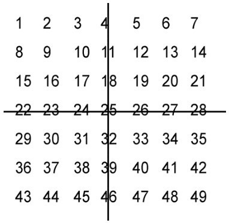
图6-11
用这36个数组成的六阶幻方如图6-12所示。丁先生的这一作品拔得头筹，竟与西方一些研究家所造出的六阶幻方一模一样。
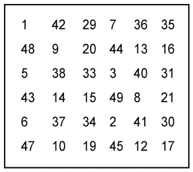
图6-12
该幻方中每行、每列、每条对角线［包括主对角线、副对角线，以及“折断”了的对角线（所谓折断了的对角线，又名泛对角线，例如42+20+3+8+30+47，或如7+13+31+43+37+19等）］上的6个数之和都等于幻方常数150，这就是完美六阶幻方。该幻方还有8条重要性质，下面结合图形简要解释。在该六阶幻方中，按图示方法取数，所有数之和均相等，且等于25乘以☆的个数。
如图6-13（a）的意思是：在该六阶幻方中，任何一个三阶方阵的9个数之和是225（=25×9）。图6-13（b）的意思是：在该六阶幻方中，任何一个四阶方阵的16个数字之和是400（=25×16）。其余的图也是同样的意思。各种情况的验证请读者自行计算，在此就不浪费篇幅了。
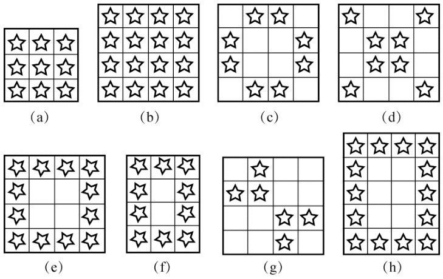
图6-13